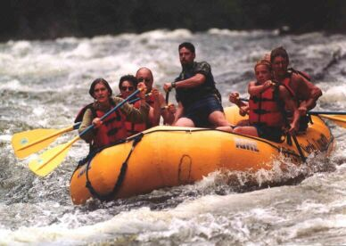

The Ancona family is
The Ancona family is Jim, Anne, Thomas and Mark.
The Ancona family is
Jim, Anne,
Thomas and Mark.
We live at:
21 Scar Hill Road
Boylston, Massachusetts
01505-1305
Telephone +1
508 869 6748
Here's a map showing where we're located.
Lots of pictures online at our photo gallery including recent snapshots and Tom's pictures.
Our 2003 Year in Pictures is online too.
We renovated the first floor of our house in 2002. Picture are available here.
Anne's brother Mark has written and published two children's books. You can read excerpts and order copies online at www.markfidler.com.
We travelled to national parks across much of the country for a month in the summer of '99. We have our journal and pictures online!
I'm a software engineer. Currently, I'm working on building eTrackMail an e-mail tracking service. Sign up for a free trial and let me know what you think!
My email address is jim@anconafamily.com.
 I grew up in Randolph Township, New Jersey, and graduated from Randolph High School in 1974. I have an AB from Dartmouth College, Class of 1978 and an MSCS from WPI.
I work as a hospice nurse at UMassMemorial Home Health and Hospice. The commute is very easy. The office is this side of Worcester, about 5 miles from home—though some days I put on 70 miles. I listen to books on tape enroute to my visits and 'read' a book a week. I am a per-diem nurse, working when needed—which is all the time! I enjoy hospice nursing, helping make a difficult time better for patients and their families. I take call overnight at least once a week.
I am still involved in Parish Nurse Ministries, Inc., a not for profit Christian organization established to promote the concept of Parish Nursing. I just handed over the reins of newsletter editor! I try to attend meetings when I am not working. There is a lot of information on Parish Nursing here or here.
I am still a board member of Koinonia of Vermont, a retreat house in Southern Vermont. Among other things, I plan their Parish Nurse yearly retreat. We are going to offer bereavement retreats and retreats for nurses. A big plus for me is the worship opportunity at nearby Weston Priory. If you want to know more about Koinonia of Vermont you can see their web site at http://www.koinoniaofvermont.org/.
I am a member of the Commission for Women of the Diocese of Worcester. We planned a womens conference attended by over 400 women this fall. It is fun and rewarding, I'm vice chairperson this year and enjoy working with a wonderful group of faith filled women.
Jim and I still sing in the choir at St. Mary of the Hills. It's our fun Thursday night out. We have more time for each other with Tom gone and Mark busy.
My email address is anne@anconafamily.com. My AIM screen name is scarhill315.
I grew up in Milton, Massachusetts, and graduated from Milton High School in 1975, Mary Hitchcock Memorial Hospital School of Nursing in 1978, and Vermont College in 1984.
 Thomas Ancona
Thomas Ancona
I am currently a second-year student at the University of Chicago. I'm probably going to be concentrating in Political Science. At school I've enjoyed doing Model United Nations, including going to a conference at the University of Pennsylvania in November. I've also enjoyed living in one of the greatest cities in the country. My gorgeous dorm room is in a renovated luxury hotel on Lake Michigan that overlooks the skyline, the lake, and the surrounding neighborhoods. The University is great, I love everyone on my floor.
Tom's Contact Info: ancona@uchicago.edu, AIM: redsoxnut007
(I'm always looking for actual mail at school too, so if you want my address just email my parents or me.)
 Mark Ancona
Mark Ancona{kind=link}